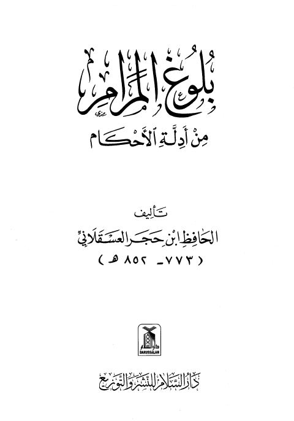
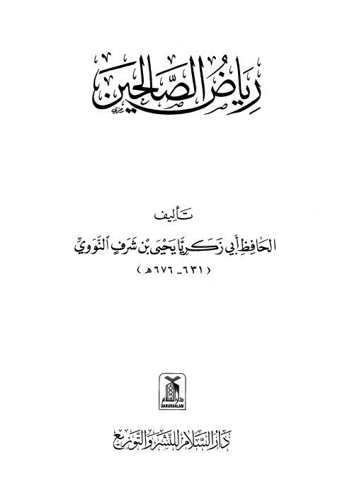
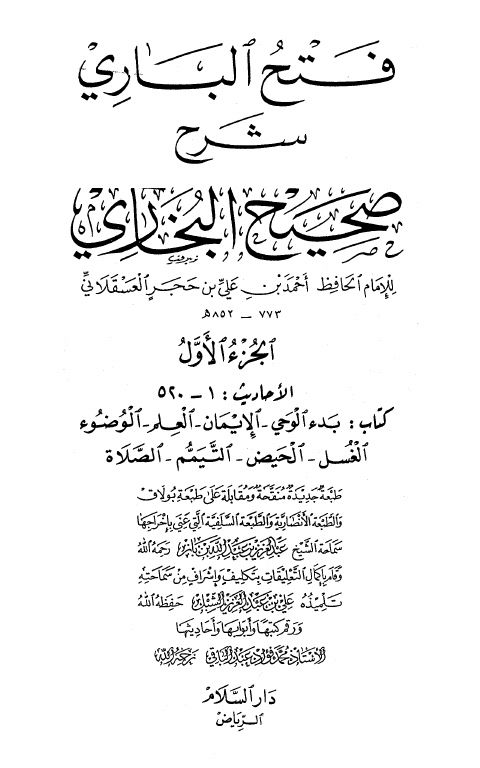
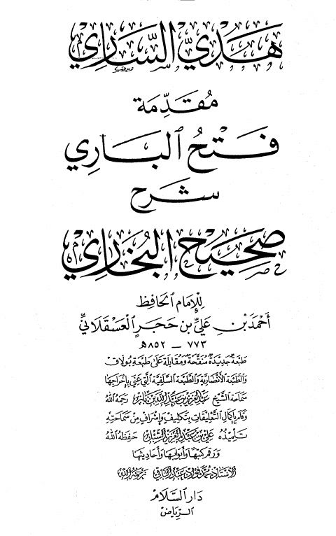
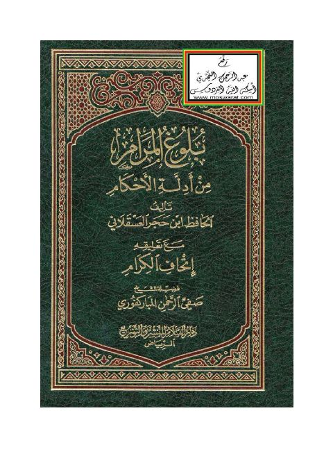
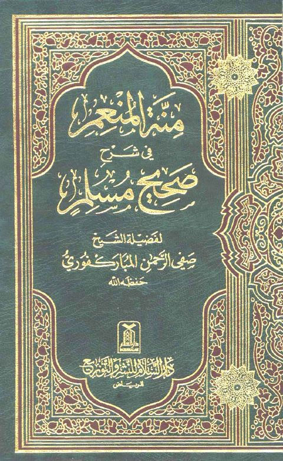
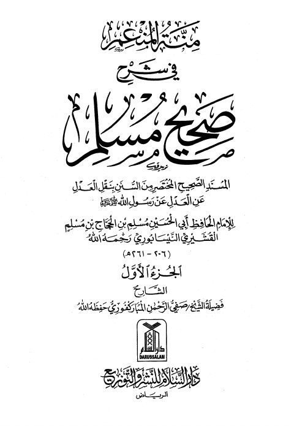
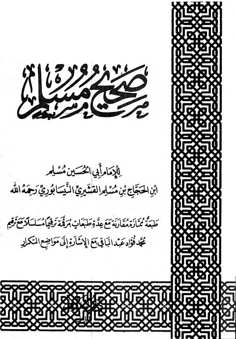

دار السلام للنشر والتوزيع
Publisher
Resources

بلوغ المرام من أدلة الأحكام- دار السلام بلوغ المرام من أدلة الأحكام- دار السلام أحمد بن علي بن حجر العسقلاني
رياض الصالحين- دار السلام رياض الصالحين- دار السلام يحيى بن شرف النووي
فتح الباري شرح صحيح البخاري -السلام- أجزاء فتح الباري شرح صحيح البخاري -السلام- أجزاء أحمد بن علي بن حجر العسقلاني
هدي الساري مقدمة فتح الباري شرح صحيح البخاري هدي الساري مقدمة فتح الباري شرح صحيح البخاري أحمد بن علي حجر العسقلاني منة المنعم في شرح صحيح مسلم المسند الصحيح المختصر من السنن بنقل العدل عن العدل عن رسول الله ﷺ- أجزاء
منة المنعم في شرح صحيح مسلم المسند الصحيح المختصر من السنن بنقل العدل عن العدل عن رسول الله ﷺ- أجزاء
مسلم بن الحجاج بن مسلم القشيري النيسابوري
منة المنعم في شرح صحيح مسلم المسند الصحيح المختصر من السنن بنقل العدل عن العدل عن رسول الله ﷺ- أجزاء
منة المنعم في شرح صحيح مسلم المسند الصحيح المختصر من السنن بنقل العدل عن العدل عن رسول الله ﷺ- أجزاء
مسلم بن الحجاج بن مسلم القشيري النيسابوري

بلوغ المرام من أدلة الأحكام مع تعليقه إتحاف الكرام بلوغ المرام من أدلة الأحكام مع تعليقه إتحاف الكرام أحمد بن علي بن حجر العسقلاني
منة المنعم في شرح صحيح مسلم المسند الصحيح المختصر من السنن بنقل العدل عن العدل عن رسول الله ﷺ- مدمجة منة المنعم في شرح صحيح مسلم المسند الصحيح المختصر من السنن بنقل العدل عن العدل عن رسول الله ﷺ- مدمجة مسلم بن الحجاج بن مسلم القشيري النيسابوري
منبه النعم في شرح صحيح مسلم منبه النعم في شرح صحيح مسلم مسلم بن الحجاج القشيري النيسابوري
صحيح مسلم- دار السلام صحيح مسلم- دار السلام مسلم بن الحجاج بن مسلم القشيري النيسابوري صحيح مسلم- مصححة
صحيح مسلم- مصححة
مسلم بن الحجاج القشيري
صحيح مسلم- مصححة
صحيح مسلم- مصححة
مسلم بن الحجاج القشيري